Smart Menu
Overview
The Smart Menu is a responsive web based ordering application designed primarily for placing orders directly from a customer’s device. Its main function is to serve as a fully interactive digital menu and ordering platform accessible through any browser, without requiring the user to download an app.
While customers can open the Smart Menu by typing the provided web link, the most common and convenient access method is by scanning a QR code displayed at the restaurant, on tables, or in marketing materials. This instantly loads the menu in a mobile-optimized interface where customers can browse categories, view detailed product descriptions, customize items, and complete their orders securely.
Once an order is placed through the Smart Menu, it is tracked in real time customers can see the live status of their orders from confirmation to preparation and completion. This tracking is synchronized with the restaurant’s back-office dashboard, POS, and kitchen display systems, ensuring accurate routing and a faster, automated service flow.
Ordering Process Overview
Customers begin by opening the Smart Menu web application in their browser. From this point, they can navigate through a structured digital menu organized into categories and subcategories. Each product entry provides detailed information, including images, descriptions, ingredient lists, and allergen warnings where applicable.
Many items can be customized with selectable modifiers, such as size, flavor variations, additional toppings, or preparation instructions. Selected items are added to the cart, where users can review their choices before proceeding. At checkout, the customer chooses from the available payment options configured by the restaurant. Once the order is submitted, it is instantly synchronized with the connected point-of-sale system and dispatched to the kitchen display for preparation, ensuring minimal processing delays..
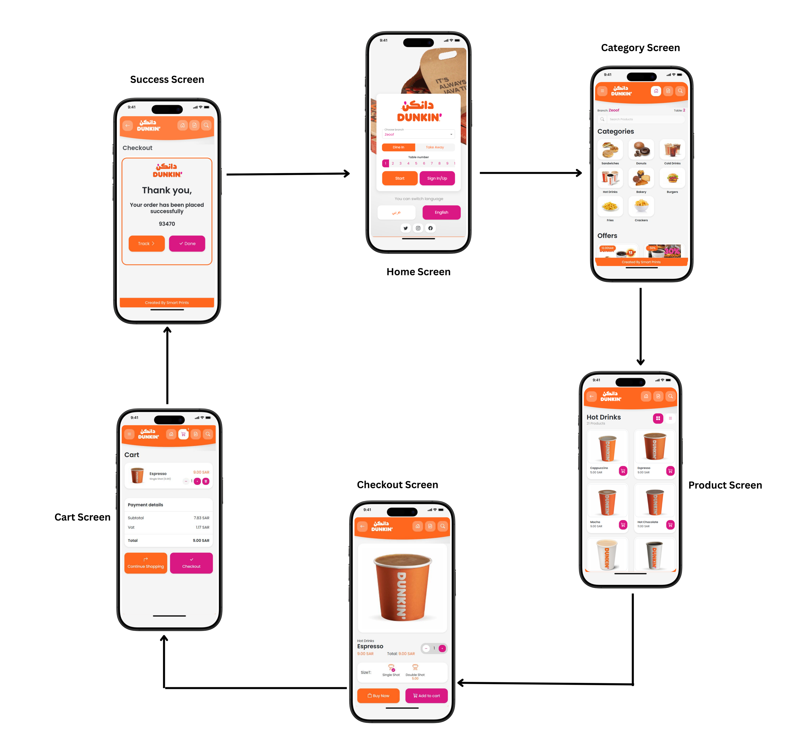
Mobile Web App
Home Screen
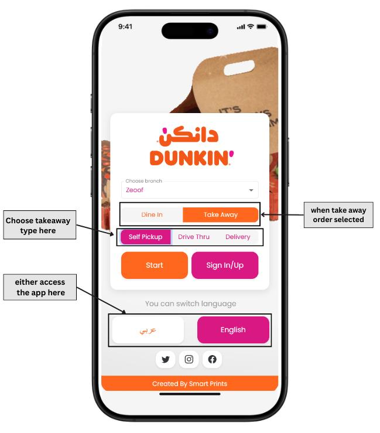
This screen acts as the main entry point for customers, offering a clear and intuitive choice of service type. The layout is designed to minimize decision time, with each option visually highlighted for quick recognition.
By combining distinct colors, large icons, and minimal on screen text, it ensures that customers can immediately proceed to their preferred ordering method without confusion.
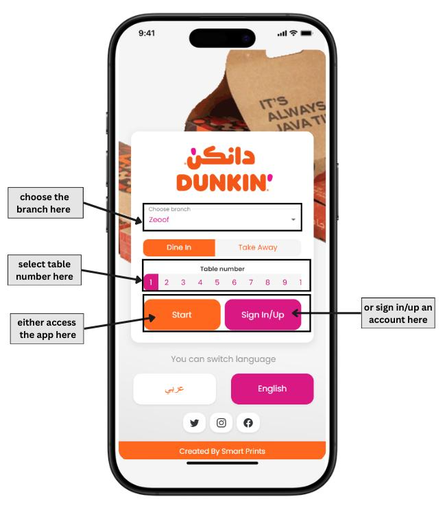
Categories Screen
The web app serves as the primary interface for customers to explore and interact with the Smart Menu system. It operates entirely within the browser, eliminating the need for downloads or installations. Upon scanning the restaurant’s unique QR code, customers are seamlessly directed to the restaurant’s fully customized digital menu. Designed with responsive web technologies, the interface adapts perfectly to any screen size, whether on a smartphone or tablet, ensuring a smooth and consistent experience.
After the user clicks the Start button, the Categories Screen appears as the first interactive stage. This screen organizes the restaurant’s offerings into clearly defined menu categories such as Appetizers, Main Courses, Desserts, Beverages, and any custom sections defined by the restaurant. Categories are displayed in an intuitive grid or list format, often accompanied by icons or representative images for quick visual identification.
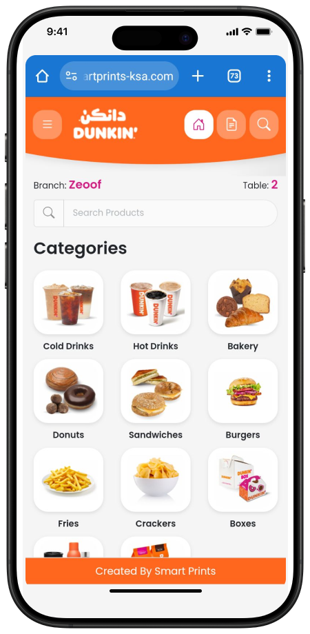
The Smart Menu home screen doesn’t only display the available categories, but also includes additional customer-focused content. When scrolling down, users can access their previous orders and view available promotional offers, providing a personalized and dynamic experience.
The design emphasizes clarity and accessibility, making it easy for users to locate their desired section with minimal scrolling or searching.
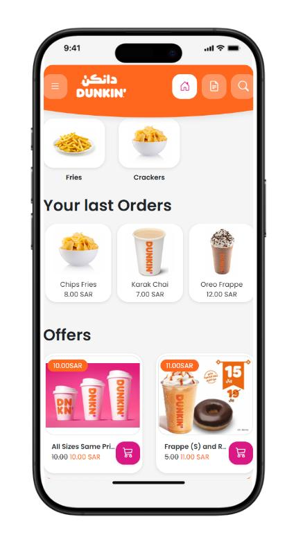
Navigating Smart Menu
Navigation within the Smart Menu application is designed to be both intuitive and efficient. The top right corner of the interface contains three quick access buttons: Home, Orders, and Search. Each serves a distinct purpose, enabling users to return to the home screen, review past orders, or locate a specific item without manually browsing categories.
The top left corner contains a menu icon represented by three horizontal lines. Clicking this icon opens the navigation drawer, which provides additional options such as accessing the shopping cart, viewing order history, performing detailed product searches, or switching the display language. This dual navigation approach ensures users can quickly move between different parts of the application, whether they are browsing for new items or managing active and past orders.
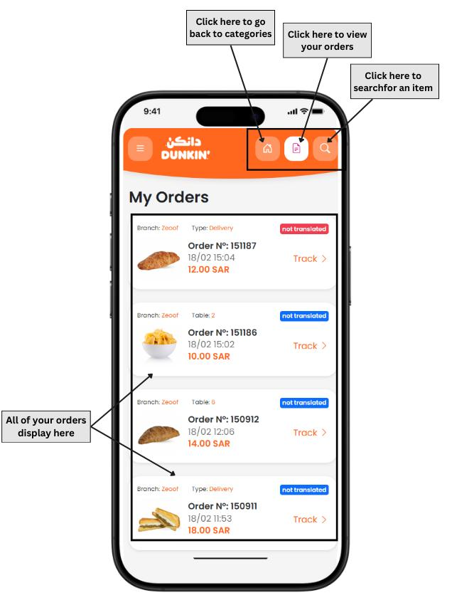
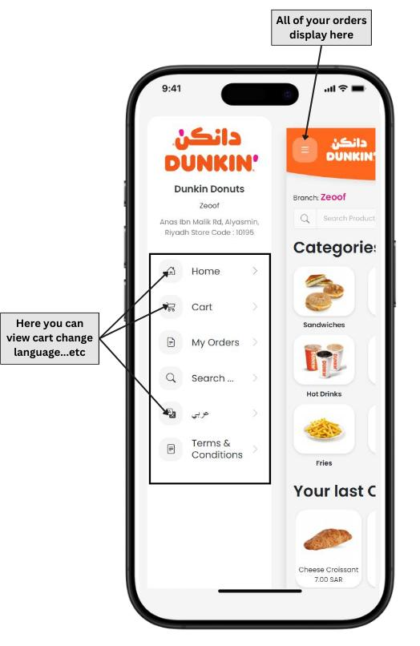
Product Screen
When a category is selected, the Product Screen presents a complete overview of all items available within that section, offering customers a clear and organized browsing experience. Each product entry prominently displays its name, price, and a high quality preview image to help customers visually recognize the item.
In addition to these details, the interface includes real-time availability indicators so users know immediately if an item can be ordered. For products that allow customization, interactive modifier options are provided, enabling customers to adjust aspects such as portion size, toppings, flavor preferences, or preparation style before adding the item to their cart. These modifiers are designed to be intuitive, ensuring the customization process feels seamless even for first time users.
The availability information is continuously synchronized with the backend system, reflecting live updates from the inventory and kitchen operations. This ensures that items which are out of stock, temporarily disabled, or unavailable due to operational constraints are automatically hidden or marked as unavailable, preventing any potential confusion.
This approach maintains accuracy, reduces the chance of customer disappointment, and ensures the displayed menu always matches the restaurant’s current stock and service capabilities.
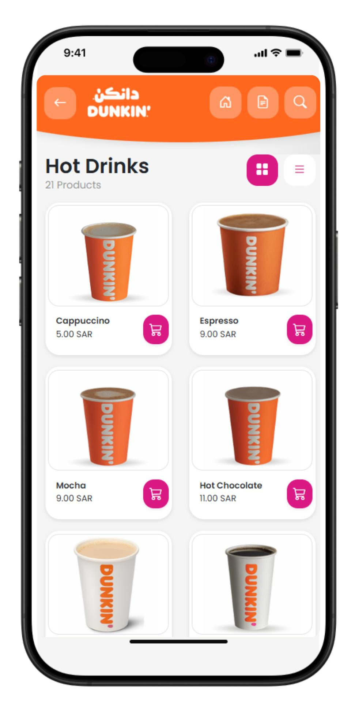
Cart Screen
After customers have selected and customized their desired items, they are directed to the cart review interface, which acts as a central hub for order verification before checkout.
On this screen, all chosen products are listed with clear item names, quantities, individual prices, and a running subtotal. This allows customers to quickly confirm they have selected the correct items and specifications. Adjustments can be made directly from this interface, including increasing or decreasing quantities, removing items entirely, or applying promotional codes or discounts when available.
The cart dynamically recalculates totals in real time, ensuring that any changes are instantly reflected in the final amount.
The system also automatically applies relevant taxes, service charges, or delivery fees based on the backend configuration, ensuring compliance with local regulations and transparent pricing for the customer.
Beyond just listing items, the cart screen serves as an important decision making checkpoint where customers can ensure accuracy and completeness. Once satisfied, they can proceed to the checkout process, confident that all details match their expectations and that the order is fully ready for submission.
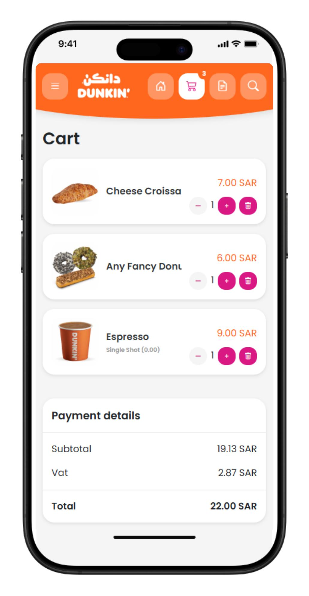
Checkout Screen
The checkout stage marks the final step of the ordering process, where customers confirm payment and complete their transaction.
Here, users are presented with the payment options offered by the restaurant, which may include traditional methods like cash and card, as well as modern solutions such as contactless payments, mobile wallets, or integrated online payment gateways. This flexibility allows the system to adapt to different customer preferences and operational setups.
Once the customer selects a payment method, the system securely processes the transaction, ensuring both speed and data security. Immediately after payment, the application displays an order confirmation screen, showing a unique order number and an estimated preparation time based on real-time kitchen workloads.
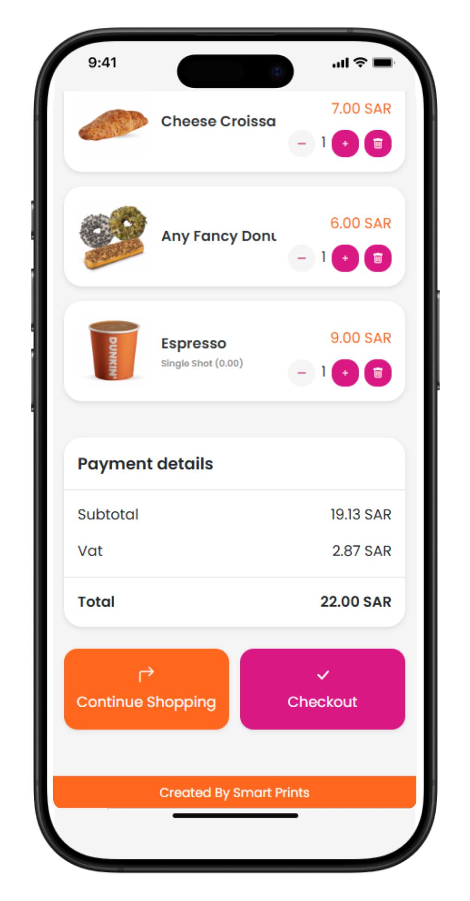
If the restaurant has live tracking enabled, customers can continue monitoring the status of their order from preparation to packaging and, if applicable, delivery directly within the app. On the backend, the order is instantly registered in both the point of sale and kitchen management systems, ensuring staff are notified without delay. The order is also logged in the reporting database for operational tracking and future analysis.
Finally, a success screen is displayed, featuring a thank you message and the order ticket number, signaling the completion of a smooth and efficient ordering experience.
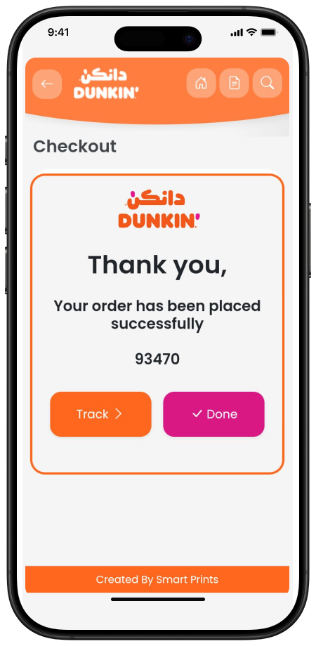
More to Smart Menu
Kitchen Application
The kitchen module is a browser-accessible interface that displays real-time order details for preparation staff. Orders are segmented by product and grouped based on destination (dine-in, takeaway, delivery). The interface supports station-specific routing, enabling each kitchen section to receive only the items assigned to it. Each product entry includes quantity, modifiers, and timestamps. Staff can mark items as "in progress" or "completed" and update statuses accordingly. The module also logs preparation histories for operational tracking and auditing purposes.

Smart Automation
Using Smart Automation Services, orders placed via the Smart Menu are automatically pushed to the connected POS system, eliminating manual entry and reducing the potential for human error. This integration ensures that all transactions are logged, inventory is updated in real time, and reports reflect accurate data across platforms. The same mechanism handles customer screen updates, kitchen screen routing, and tax or discount application logic. The automation also simplifies refund processing and order tracking by synchronizing across modules.
Cloud Administration
The backend administration panel allows authorized users to manage and configure all aspects of the Smart Menu system. Through a web browser, users can modify product prices, descriptions, availability status, menu structures, and display orders. Each location or branch can be configured individually, while administrators can still enforce global policies. In addition to menu control, the panel supports banner and promotion setup, user account roles, and sales tracking. Permissions are role-based, with access limited based on user level (admin, branch manager, etc.).

Data & Language Support
The Smart Menu Solution is designed to accommodate diverse customer bases through its full multilingual interface, currently supporting both Arabic and English. All visual elements, including labels, buttons, descriptions, and product names, can be fully managed and updated in both languages, ensuring clarity and accessibility for all users regardless of their language preference. This adaptability makes the system suitable for restaurants serving multicultural communities or operating in regions where bilingual service is essential.
Beyond its customer facing features, the system also provides robust data management capabilities. It helps generate detailed reports and analytics covering a wide range of operational metrics such as order history, daily sales, customer purchase patterns, and product performance. These reports can be exported in CSV format for easy integration with other business tools and can be filtered by variables like date range, location, or order type. Such data empowers restaurant managers to evaluate performance trends, identify high demand products, and optimize menu offerings accordingly.
Additionally, the reporting functionality serves as a valuable tool for forecasting, allowing businesses to plan for peak periods, manage inventory effectively, and continuously improve their operational efficiency.
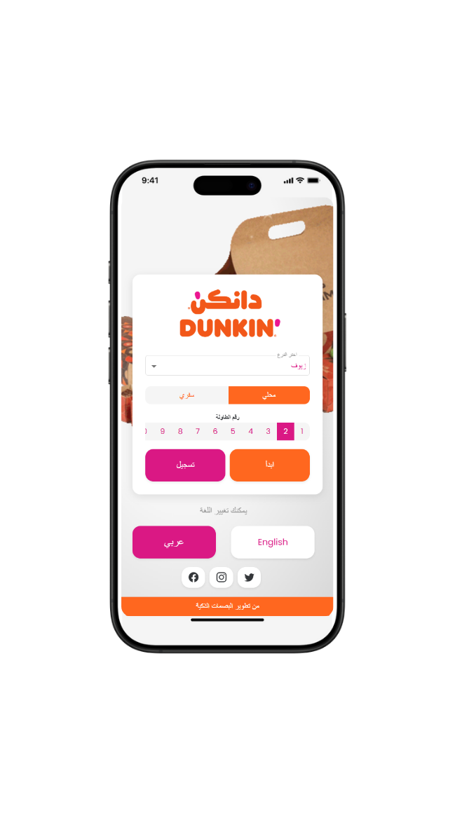
Conclusion
The Smart Menu solution delivers a seamless, modern, and contactless ordering experience for both dine-in and takeaway customers. Whether accessed via scanning a QR code placed on the table or wall, or by directly visiting the restaurant's web app link, users can browse, customize, and submit their orders effortlessly without the need to download or install any app.
From its responsive mobile interface to deep integration with the POS, kitchen, and cloud administration systems, Smart Menu ensures that each transaction is synchronized in real-time. The system supports multilingual interaction, dynamic menu filtering, smart automation, and reporting features, making it a powerful tool for streamlining restaurant operations and enhancing customer satisfaction.
Whether deployed in a single location or across multiple branches, the Smart Menu offers full scalability and customization. It empowers businesses to manage product visibility, order flow, and pricing logic from a centralized interface while customers enjoy a fast, intuitive, and personalized ordering journey.
In short, Smart Menu transforms traditional menus into dynamic digital interfaces that bridge operational efficiency with customer convenience all accessible from the comfort of a mobile browser.